Tables of First Nations, Inuit and Métis health and wellbeing: reading them, their quality flags, and gaps with their uncertainty.
Each section is one help page: what the function is for, the example
of its help page as it runs, and the plot of its result where the
package draws one. ?name gives the arguments and the value
in full.
Read a Statistics Canada table as published
sctidy(): Tidies a Statistics Canada full-table download
(the “CSV for database loading” form, ): VALUE as a number,
and the quality flags kept beside it in quality.
# the layout of a downloaded table, with one cell suppressed (made-up
# numbers)
d <- data.frame(REF_DATE = "2019/2022", GEO = "Canada",
`Indigenous identity` = c("First Nations", "Inuk (Inuit)",
"Non-Indigenous"),
VALUE = c("45.8", "", "61.5"), STATUS = c("", "x", ""),
check.names = FALSE)
sctidy(d)
#> Statistics Canada table, tidied
#> -------------------------------
#> Rows: 3
#> Columns: 6
#> Quality: ok 2, x 1
#>
#> REF_DATE GEO Indigenous identity VALUE quality
#> 2019/2022 Canada First Nations 45.8 ok
#> 2019/2022 Canada Inuk (Inuit) NA x
#> 2019/2022 Canada Non-Indigenous 61.5 ok
#>
#> VALUE is numeric; a suppressed cell (F, x, .., ...) is NA, with its
#> flag kept in quality.
#>
#> Symbols: E use with caution; F too unreliable to be published;
#> x suppressed (confidentiality); .. not available; ... not applicable.The estimates of a Statistics Canada table, with their confidence limits
scests(): Statistics Canada’s tables give each estimate
on several rows: the estimate itself (a percent, a rate, a count, a life
expectancy), its low and high confidence limits, or its coefficient of
variation or standard error, all in one statistics column
(Statistics, Characteristics,
Statistics (3), …). This puts them side by side, one row
per cell of the table and measure, ready for indgap,
ordcmp, stdprev and the rest. Every table
reads: one without a statistics column (a census count) gives each value
as its own estimate, with no limits.
# the layout of a downloaded table: percent and number of persons, with
# limits for the percent
d <- data.frame(
REF_DATE = "2022",
GEO = "Canada",
`Indigenous identity` = rep(c("First Nations", "Metis"), each = 4),
Statistics = rep(
c(
"Number of persons",
"Percent",
"Low 95% confidence interval",
"High 95% confidence interval"
),
2
),
UOM = rep(c("Persons", "Percent", "Percent", "Percent"), 2),
VALUE = c(415000, 47.1, 45.2, 49.0, 320000, 50.3, 48.1, 52.5),
STATUS = "",
check.names = FALSE
)
scests(d)
#> Statistics Canada table, tidied
#>
#> REF_DATE GEO Indigenous identity measure estimate lower upper cisou quality
#> 2022 Canada First Nations Number of persons 415000.0 NA NA NA ok
#> 2022 Canada First Nations Percent 47.1 45.2 49.0 published ok
#> 2022 Canada Metis Number of persons 320000.0 NA NA NA ok
#> 2022 Canada Metis Percent 50.3 48.1 52.5 published ok
# a rate with its coefficient of variation instead of limits
r <- data.frame(
GEO = "Canada",
Characteristics = c("Rate", "Coefficient of variation for rate"),
VALUE = c(12.5, 8),
STATUS = ""
)
scests(r)
#> Statistics Canada table, tidied
#>
#> GEO measure estimate lower upper cisou quality
#> Canada Rate 12.5 10.69 14.62 cv okRecode another agency’s quality flags to the package’s
qltyrcd(): The comparisons of this family read
Statistics Canada’s quality flags: E (use with caution),
and F, x, .., ...
(no value: too unreliable, suppressed, not available, not applicable).
Other agencies flag otherwise: the Australian Bureau of Statistics
np (not published) and * or **
(relative standard error over 25% or 50%), Stats NZ S
(suppressed), the US Census Bureau (X). This maps them to
the package’s vocabulary, so suppressed cells are never compared and
uncertain ones are marked.
Confidence limits from a standard error, a coefficient of variation or a margin of error
limfrom(): The comparisons of this family take an
estimate and its published confidence limits. Agencies that publish a
standard error, a relative standard error (coefficient of variation) or
a margin of error instead give the same information; this turns it into
limits at the level wanted.
limfrom(c(24.1, 31.5), cv = c(8, 12))
#> Intervals from published precision
#> ----------------------------------
#> Estimates: 2
#> Interval: normal, estimate +/- z x se (default 95%)
#>
#> estimate se interval
#> 24.1 1.928 [20.32, 27.88]
#> 31.5 3.780 [24.09, 38.91]
#>
#> Each interval is rebuilt from the published standard error, CV or margin of error, assuming a normal sampling distribution.
limfrom(1520, moe = 210) # a 90% margin of error
#> Intervals from published precision
#> ----------------------------------
#> Estimates: 1
#> Interval: normal, estimate +/- z x se (default 95%)
#>
#> estimate se interval
#> 1520 127.7 [1270, 1770]
#>
#> Each interval is rebuilt from the published standard error, CV or margin of error, assuming a normal sampling distribution.Compare published group estimates with a reference group
indgap(): For published estimates with their confidence
limits (percentages, rates, years of life expectancy: any scale, with
the limits on the same scale), the ratio and the difference of each
group to a reference group, with confidence intervals worked from the
published ones: First Nations, Metis and Inuit against non-Indigenous
people, Aboriginal and Torres Strait Islander people against
non-Indigenous Australians, Maori against non-Maori, or any groups with
published intervals.
# made-up percentages for three groups and their pooled total, with
# published limits and one estimate flagged E
d <- data.frame(
group = c("First Nations", "Metis", "Inuit", "Total Indigenous",
"Non-Indigenous"),
pct = c(45.8, 52.8, 47.8, 49, 61.5),
lo = c(43.9, 50.6, 43.1, 47.5, 61),
hi = c(47.7, 55, 52.5, 50.5, 62),
q = c("", "", "E", "", "")
)
indgap(d, "group", "pct", "lo", "hi", qual = "q")
#> Gap against a reference group
#> -----------------------------
#> Reference: Non-Indigenous
#> Groups: 4
#> Intervals: 95%
#>
#> group estimate refest ratio ratio CI difference difference CI
#> First Nations 45.8 61.5 0.7447 [0.714, 0.777] -15.7 [-17.7, -13.7]
#> Metis 52.8 61.5 0.8585 [0.823, 0.896] -8.7 [-11, -6.44]
#> Inuit * 47.8 61.5 0.7772 [0.704, 0.858] -13.7 [-18.4, -8.97]
#> Total Indigenous (pooled) 49.0 61.5 0.7967 [0.772, 0.822] -12.5 [-14.1, -10.9]
#>
#> Below the reference (interval below 1): First Nations, Metis, Inuit * and Total Indigenous (pooled).
#>
#> ratio: the group's estimate over the reference's; difference: the
#> group's less the reference's, in the estimate's own units.
#> (pooled): a pan-Indigenous total, shown beside, not a distinct group (poogrp).
#> Report a gap beside each group's own level, not alone.
#> * use with caution: the source flags the estimate (E, high sampling variability).
# your own table: made-up numbers in another country's layout, with relative
# standard errors instead of limits and that agency's flags
own <- data.frame(
group = c(
"Aboriginal",
"Torres Strait Islander",
"Aboriginal and Torres Strait Islander",
"Non-Indigenous Australians"
),
pct = c(31.2, 27.5, 30.8, 18.9),
rse = c(4.1, 22.0, 3.9, 1.2),
flag = c("", "*", "", "")
)
own <- cbind(own, limfrom(own$pct, cv = own$rse)[c("lower", "upper")])
own$q <- qltyrcd(own$flag, suppr = c("np", "**"), caution = "*")
indgap(
own,
"group",
"pct",
"lower",
"upper",
ref = "Non-Indigenous Australians",
qual = "q",
pooled = "Aboriginal and Torres Strait Islander"
)
#> Gap against a reference group
#> -----------------------------
#> Reference: Non-Indigenous Australians
#> Groups: 3
#> Intervals: 95%
#>
#> group estimate refest ratio ratio CI difference difference CI
#> Aboriginal 31.2 18.9 1.651 [1.52, 1.8] 12.3 [9.75, 14.8]
#> Torres Strait Islander * 27.5 18.9 1.455 [0.917, 2.31] 8.6 [-3.27, 20.5]
#> Aboriginal and Torres Strait Islander (pooled) 30.8 18.9 1.630 [1.5, 1.77] 11.9 [9.5, 14.3]
#>
#> Above the reference (interval above 1): Aboriginal and Aboriginal and Torres Strait Islander (pooled).
#> Not distinguishable from 1 (interval includes it): Torres Strait Islander *.
#>
#> ratio: the group's estimate over the reference's; difference: the
#> group's less the reference's, in the estimate's own units.
#> (pooled): a pan-Indigenous total, shown beside, not a distinct group (poogrp).
#> Report a gap beside each group's own level, not alone.
#> * use with caution: the source flags the estimate (E, high sampling variability).
res <- indgap(
own,
"group",
"pct",
"lower",
"upper",
ref = "Non-Indigenous Australians",
qual = "q",
pooled = "Aboriginal and Torres Strait Islander"
)
plot(res)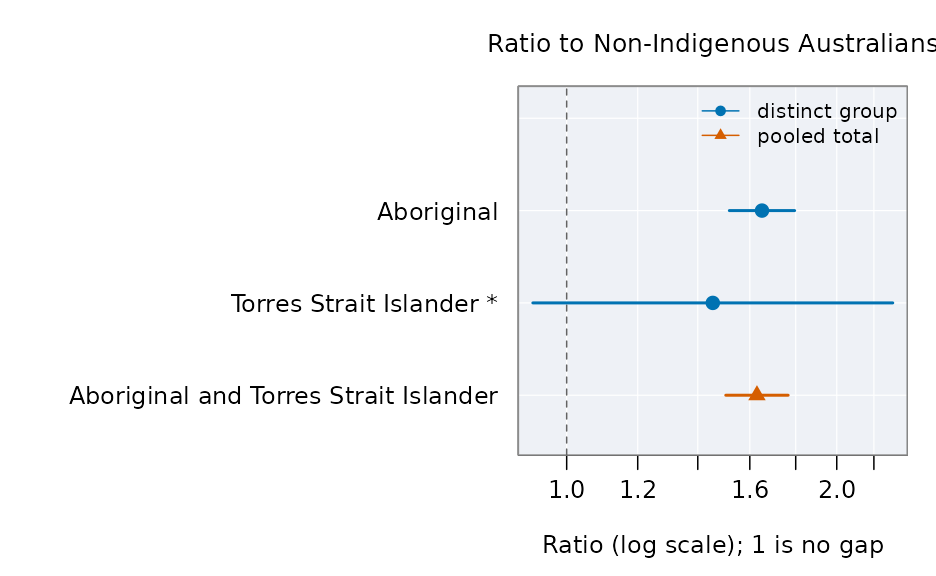
Compare rated scales (perceived mental health, life satisfaction) between groups
ordcmp(): For a rated scale published as the percentage
in each category with its confidence limits (perceived mental health
from poor to excellent, life satisfaction from 0 to 10, agreement with a
statement), the probability that a person in each group rates higher
than a person in the reference group, with its confidence interval: a
comparison of the whole distribution, not of one category cut from
it.
# your own table: a made-up four-level rating for two groups, with limits
own <- data.frame(
group = rep(c("Nation A", "Everyone else"), each = 4),
rating = rep(c("Poor", "Fair", "Good", "Excellent"), 2),
pct = c(10, 25, 40, 25, 6, 20, 44, 30),
lo = c(7, 21, 35, 21, 5, 18, 42, 28),
hi = c(13, 29, 45, 29, 7, 22, 46, 32)
)
ordcmp(own, "group", "rating", "pct", "lo", "hi",
lvls = c("Poor", "Fair", "Good", "Excellent"), ref = "Everyone else")
#> Ordinal comparison against a reference group
#> --------------------------------------------
#> Reference: Everyone else
#> Reference neff: 2092
#> Levels: 4
#> Measure: chance a person in the group rates higher, ties half
#>
#> group probbet interval delta neff
#> Nation A 0.4475 [0.419, 0.477] -0.105 417
#>
#> Rate lower than Everyone else (interval below 0.5): Nation A.
#>
#> probbet 0.5 is no difference; above 0.5 the group rates higher.
#> delta (Cliff's) = share rating higher less share rating lower.
#> neff: the effective sample size the published limits imply (it
#> carries the survey's design effect).
res <-
ordcmp(own, "group", "rating", "pct", "lo", "hi",
lvls = c("Poor", "Fair", "Good", "Excellent"), ref = "Everyone else")
plot(res)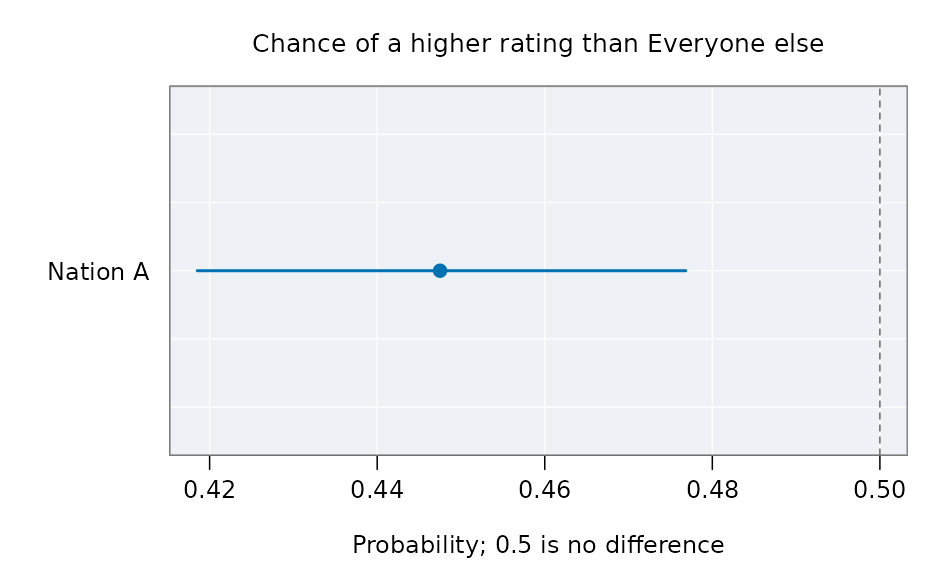
Age-standardise survey percentages
stdprev(): The percentage (or proportion, or rate) a
group would have with the age structure of a standard population, from
the estimate and published limits in each age group: for comparing First
Nations, Metis and Inuit prevalences (suicidal thoughts, mood and
anxiety disorders, heavy drinking) with each other and with an older
population, for example, when the age pattern of the outcome is
steep.
# made-up percentages in three age groups for two groups, standardised to a
# population of 500, 300 and 200 in those age groups
stdprev(
est = c(12, 9, 6, 8, 6, 4),
lower = c(9, 6, 3, 7, 5, 3),
upper = c(15, 12, 9, 9, 7, 5),
std = c(500, 300, 200),
grp = rep(c("Nation A", "Everyone else"), each = 3)
)
#> Age-standardised prevalence
#> ---------------------------
#> Groups: 2
#> Method: direct standardisation to the standard population given
#>
#> group estimate interval se
#> Nation A 9.9 [8.05, 11.7] 0.9436
#> Everyone else 6.6 [5.98, 7.22] 0.3145
#>
#> Highest prevalence: Nation A (9.9); lowest: Everyone else (6.6).
#> Their intervals do not overlap: the gap is more than sampling error.
#>
#> Each group's prevalence as if it had the standard population's ages,
#> so the groups compare without their age structures.
#> Compare only rates standardised to the same population.
res <- stdprev(
est = c(12, 9, 6, 8, 6, 4),
lower = c(9, 6, 3, 7, 5, 3),
upper = c(15, 12, 9, 9, 7, 5),
std = c(500, 300, 200),
grp = rep(c("Nation A", "Everyone else"), each = 3)
)
plot(res)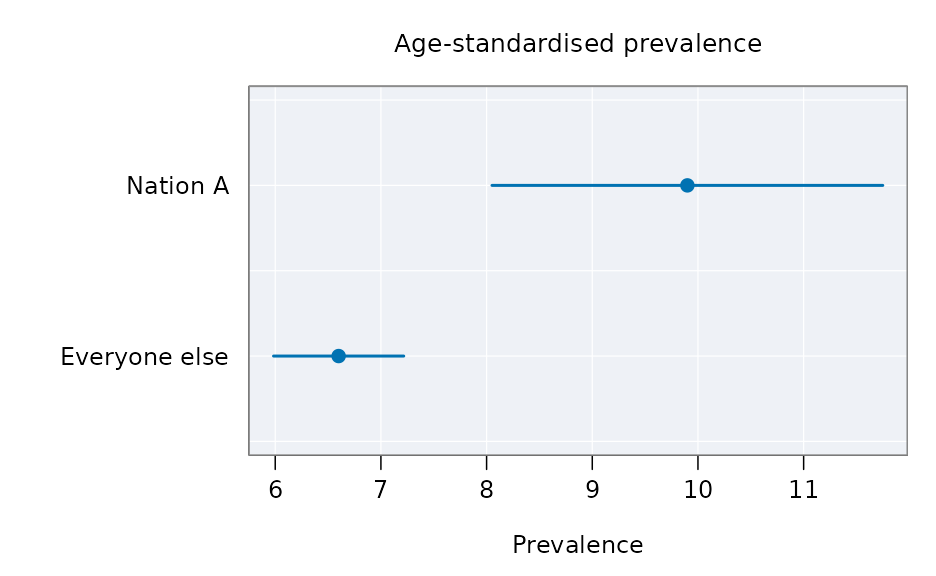
Wellness beside distress: a strengths-first profile of published indicators
welprof(): Puts a group’s wellness indicators (life
satisfaction, perceived mental health, a hopeful outlook, a sense of
belonging, a strong cultural identity) first and its distress indicators
(suicidal thoughts, mood and anxiety disorders, fair or poor mental
health) after them, each with its published interval, for each First
Nations, Metis and Inuit group: so that a table of mental health is
never read, or plotted, as a list of deficits alone.
# your own table: made-up percentages for two communities, with limits
own <- data.frame(
community = rep(c("Lakeside", "Riverbend"), each = 4),
item = rep(c("Hopeful", "Satisfied", "Rarely hopeful", "Low satisfaction"),
2),
pct = c(64, 71, 12, 18, 58, 66, 16, 22),
lo = c(59, 66, 9, 14, 52, 60, 12, 17),
hi = c(69, 76, 15, 22, 64, 72, 20, 27)
)
welprof(own, "community", "item", "pct", "lo", "hi",
well = c("Hopeful", "Satisfied"),
distress = c("Rarely hopeful", "Low satisfaction"))
#> Wellness profile
#> ----------------
#> Groups: Lakeside; Riverbend
#> Wellness indicators: 2
#> Distress indicators: 2
#>
#> Hopeful (wellness)
#> group estimate interval
#> Lakeside 64 [59, 69]
#> Riverbend 58 [52, 64]
#>
#> Satisfied (wellness)
#> group estimate interval
#> Lakeside 71 [66, 76]
#> Riverbend 66 [60, 72]
#>
#> Rarely hopeful (distress)
#> group estimate interval
#> Lakeside 12 [9, 15]
#> Riverbend 16 [12, 20]
#>
#> Low satisfaction (distress)
#> group estimate interval
#> Lakeside 18 [14, 22]
#> Riverbend 22 [17, 27]
#>
#> On none of the 4 indicators do the groups' intervals part: the data cannot rank the groups on any of them.
#>
#> Wellness indicators come first, so each group's strengths are read
#> before its distress (Stewart 2008).
res <- welprof(own, "community", "item", "pct", "lo", "hi",
well = c("Hopeful", "Satisfied"),
distress = c("Rarely hopeful", "Low satisfaction"))
plot(res)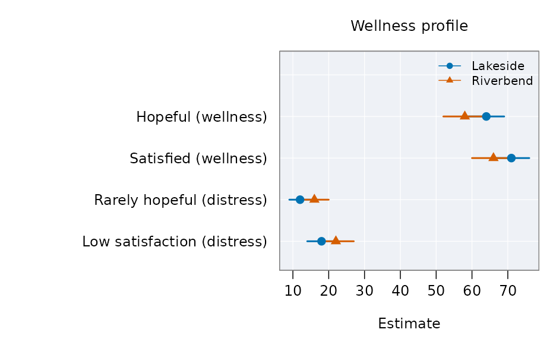
Wellness and distress as two continua
dualcont(): For each group, one wellness indicator
against one distress indicator, each with its published interval, and
the ratio of the two: the dual-continua view of mental health, in which
wellness is not the absence of distress and is measured in its own
right.
# your own table: made-up percentages for two communities, with limits
own <- data.frame(
community = rep(c("Lakeside", "Riverbend"), each = 4),
item = rep(c("Hopeful", "Satisfied", "Rarely hopeful", "Low satisfaction"),
2),
pct = c(64, 71, 12, 18, 58, 66, 16, 22),
lo = c(59, 66, 9, 14, 52, 60, 12, 17),
hi = c(69, 76, 15, 22, 64, 72, 20, 27)
)
w <- welprof(own, "community", "item", "pct", "lo", "hi",
well = "Hopeful", distress = "Rarely hopeful")
dualcont(w, "Hopeful", "Rarely hopeful")
#> Dual continuum: wellness beside distress
#> ----------------------------------------
#> Wellness: Hopeful
#> Distress: Rarely hopeful
#> Groups: 2
#> Ratio: wellness over distress, log-normal interval
#>
#> group wellness interval distress interval ratio ratio interval
#> Lakeside 64 [59, 69] 12 [9, 15] 5.333 [4.08, 6.97]
#> Riverbend 58 [52, 64] 16 [12, 20] 3.625 [2.75, 4.78]
#>
#> A ratio above 1: more people report the wellness than the distress.
#> 2 of 2 groups have the whole interval above 1.
#>
#> Both estimates come from the same respondents and their covariance
#> is not published: the interval treats them as independent.
plot(w)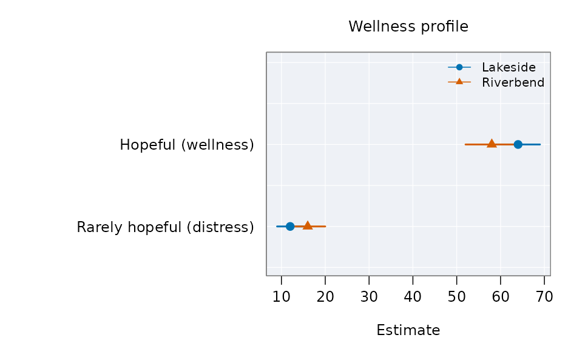
Holistic balance: how evenly wellness is held across the domains of a whole person
holbal(): For each group, from published percentages of
wellness in each holistic domain (physical, emotional, mental,
spiritual, or the domains a community names), the overall level of
wellness and how balanced it is across the domains, with Monte Carlo
intervals from the published ones.
# your own table: made-up percentages of wellness in four domains a Nation
# set for itself, for two communities
own <- data.frame(
community = rep(c("Lakeside", "Riverbend"), each = 4),
domain = rep(c("body", "mind", "spirit", "family"), 2),
pct = c(62, 58, 70, 75, 55, 61, 66, 80),
lo = c(57, 53, 65, 70, 49, 55, 60, 75),
hi = c(67, 63, 75, 80, 61, 67, 72, 85)
)
holbal(own, "community", "domain", "pct", "lo", "hi", reps = 2000)
#> Holistic balance across the domains
#> -----------------------------------
#> Groups: 2
#> Weights: equal, over 4 domains
#> Balance: weighted geometric over arithmetic mean of the domain levels
#>
#> group level level CI balance balance CI weakest
#> Lakeside 66.25 [63.7, 68.8] 0.9950 [0.99, 0.998] mind
#> Riverbend 65.50 [62.6, 68.4] 0.9905 [0.984, 0.996] body
#>
#> Domain levels (percent)
#> group body mind spirit family
#> Lakeside 62 58 70 75
#> Riverbend 55 61 66 80
#>
#> Highest balance: Lakeside (0.995); lowest: Riverbend (0.9905).
#> Their intervals overlap, which alone does not mean they are the same: the difference has its own, narrower interval.
#> The weakest domain is body for 1 of 2 groups.
#>
#> balance is 1 when every domain is at the same level and falls toward
#> 0 as one falls behind; level is the weighted mean, reported beside it.
#> A method inspired by Stewart (2008), not taken from it.
#> The weights say how much each domain counts; a community may set
#> its own (CARE: authority to control, Carroll et al. 2020).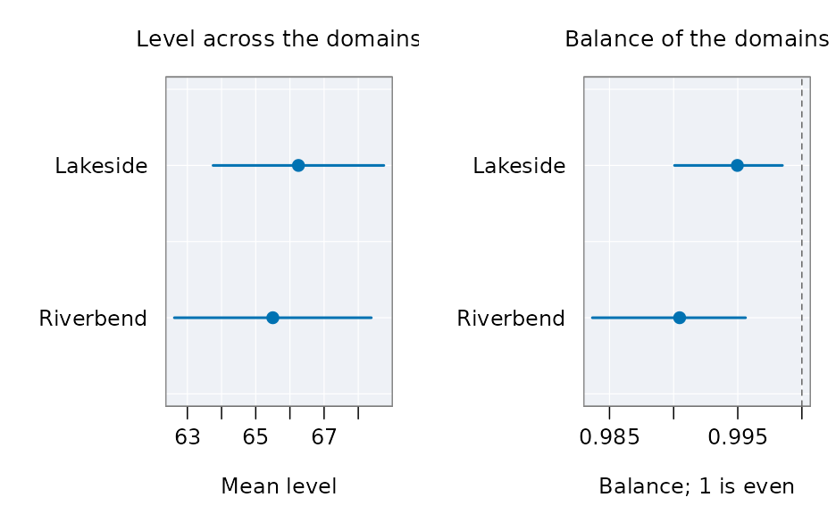
The four directions of the First Nations Mental Wellness Continuum, from published indicators
mhcont(): Lays out a group’s published indicators under
the four outcomes of the First Nations Mental Wellness Continuum
Framework (hope, belonging, meaning, purpose), each with its interval,
and says which directions the tables have no measure of.
# your own table: made-up percentages for two communities, with limits;
# one item stands for both meaning and purpose, and none for belonging
own <- data.frame(
community = rep(c("Lakeside", "Riverbend"), each = 2),
item = rep(c("Hopeful", "Life has meaning"), 2),
pct = c(64, 70, 58, 75),
lo = c(59, 65, 52, 70),
hi = c(69, 75, 64, 80)
)
mhcont(own, "community", "item", "pct", "lo", "hi", hope = "Hopeful",
meaning = "Life has meaning", purp = "Life has meaning")
#> First Nations Mental Wellness Continuum: the four directions
#> ------------------------------------------------------------
#> Groups: Lakeside; Riverbend
#> Directions: hope, belonging, meaning, purpose
#> Estimates: percent, from the published tables
#>
#> Lakeside
#> direction estimate interval proxy
#> hope 64 [59, 69] yes
#> belonging NA none published
#> meaning 70 [65, 75] yes (shared)
#> purpose 70 [65, 75] yes (shared)
#>
#> Riverbend
#> direction estimate interval proxy
#> hope 58 [52, 64] yes
#> belonging NA none published
#> meaning 75 [70, 80] yes (shared)
#> purpose 75 [70, 80] yes (shared)
#>
#> No published proxy: belonging
#> -- reported as missing, never filled from another direction.
#>
#> Proxy for hope: Hopeful
#> Proxy for meaning: Life has meaning
#> Proxy for purpose: Life has meaning
#> Every level is a proxy: no survey table measures the directions as
#> the Framework defines them (Health Canada and AFN 2015).
#> yes (shared): one indicator serves two directions, counted for each.
res <- mhcont(own, "community", "item", "pct", "lo", "hi", hope = "Hopeful",
meaning = "Life has meaning", purp = "Life has meaning")
plot(res)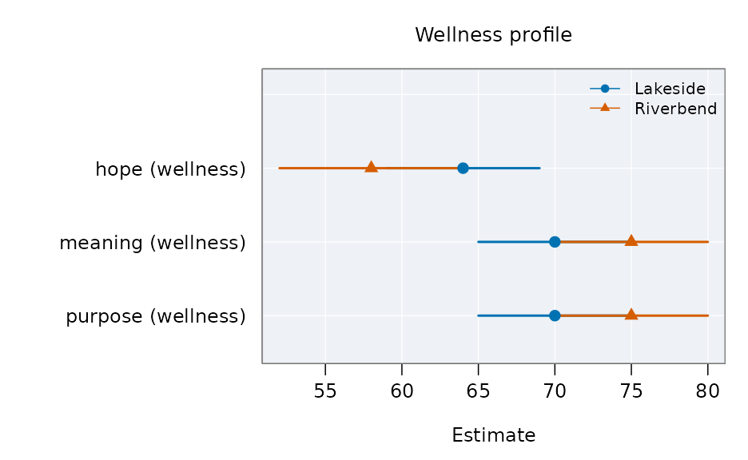
Healing as a process: change in published indicators between two periods
healchg(): For each group and indicator, the change
between two survey periods with its confidence interval, wellness
indicators first: change over time read as Indigenous scholars describe
mental health, as a process of healing, not as a fixed deficit.
# your own table: made-up percentages for one community in two surveys
own <- data.frame(
community = "Lakeside",
item = rep(c("Good mental health", "Anxiety"), 2),
survey = rep(c("2018", "2023"), each = 2),
pct = c(55, 14, 61, 11),
lo = c(50, 11, 56, 8),
hi = c(60, 17, 66, 14)
)
healchg(own, "community", "item", "survey", "pct", "lo", "hi",
from = "2018", to = "2023", well = "Good mental health",
distress = "Anxiety")
#> Healing as change between two periods
#> -------------------------------------
#> Periods: 2018 to 2023
#> Groups: Lakeside
#> Indicators: 2
#> Units: the estimate's own (percentage points for percentages)
#>
#> Good mental health (wellness)
#> group from to change interval
#> Lakeside 55 61 6 [-1.07, 13.1]
#>
#> Anxiety (distress)
#> group from to change interval
#> Lakeside 14 11 -3 [-7.24, 1.24]
#>
#> 0 of 2 changes have an interval clear of zero.
#> Wellness: 0 rose and 0 fell by more than chance; distress: 0 rose and 0 fell.
#>
#> Wellness indicators come first: a change is read as part of healing.
#> A change is only as comparable as the two periods' questions and
#> designs: across a break in the series it is not a change in people.
res <- healchg(own, "community", "item", "survey", "pct", "lo", "hi",
from = "2018", to = "2023", well = "Good mental health",
distress = "Anxiety")
plot(res)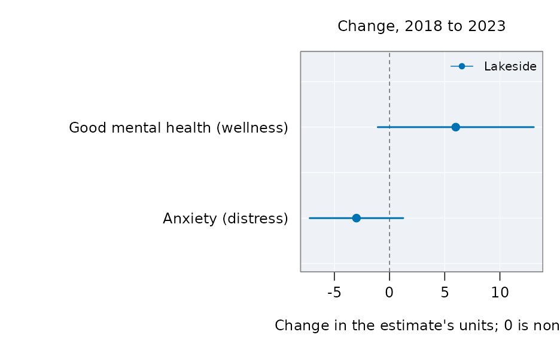
Connection across places: does one indicator rise where another does?
connassoc(): For two indicators published for the same
places (regions, provinces, Inuit regions), their rank correlation
across places, an exact permutation p-value, and an interval that
carries the sampling error of the published estimates: for connection to
land and wellness, community belonging and mental health, education and
health.
# your own places: made-up shares in six regions, without limits
own <- data.frame(
region = c("North", "South", "East", "West", "Coast", "Interior"),
language = c(41, 18, 27, 33, 22, 38),
wellbeing = c(68, 55, 60, 66, 57, 63)
)
connassoc(own, "region", "language", "wellbeing", reps = 2000)
#> Connection across places
#> ------------------------
#> Places: 6
#> Indicators: language and wellbeing
#> Rank correlation: rho = 0.94
#> p-value: 0.0167 (exact, every permutation)
#>
#> Across these places the two rank strongly together.
#>
#> An association across places only:
#> it does not show that one causes the other for any person.A community-weighted index of protective and risk factors
commidx(): Combines published indicators into one index
for each group or place, with weights the community sets: protective
factors count for, risk factors against. The weights are never
estimated.
# your own table and the weights a community chose: made-up percentages
own <- data.frame(
community = rep(c("Lakeside", "Riverbend"), each = 3),
item = rep(c("Speaks the language", "Has a doctor", "Food insecure"), 2),
pct = c(38, 72, 21, 25, 64, 30),
lo = c(33, 67, 17, 20, 58, 25),
hi = c(43, 77, 25, 30, 70, 35)
)
commidx(own, "community", "item", "pct", "lo", "hi",
w = c("Speaks the language" = 2, "Has a doctor" = 1,
"Food insecure" = -1))
#> Community-weighted index of protective and risk factors
#> -------------------------------------------------------
#> Groups: 2
#> Indicators: 3
#> Index: sum of w x estimate over sum of |w|, on the indicators' scale
#>
#> group index interval
#> Lakeside 31.75 [28.8, 34.7]
#> Riverbend 21.00 [17.8, 24.2]
#>
#> Highest index: Lakeside (31.75); lowest: Riverbend (21).
#> Their intervals do not overlap: the gap is more than sampling error.
#>
#> A higher index: more of the protective factors, less of the risks,
#> under the weights given.
#> Weights (positive protective, negative risk):
#> +2 Speaks the language
#> +1 Has a doctor
#> -1 Food insecure
#> The weights are a judgement for the people the index describes;
#> with other weights it ranks places otherwise. It is never a ranking
#> of Nations or communities on their culture.
#> Risk and protective factors: Inuit Tapiriit Kanatami (2016).
res <- commidx(own, "community", "item", "pct", "lo", "hi",
w = c("Speaks the language" = 2, "Has a doctor" = 1,
"Food insecure" = -1))
plot(res)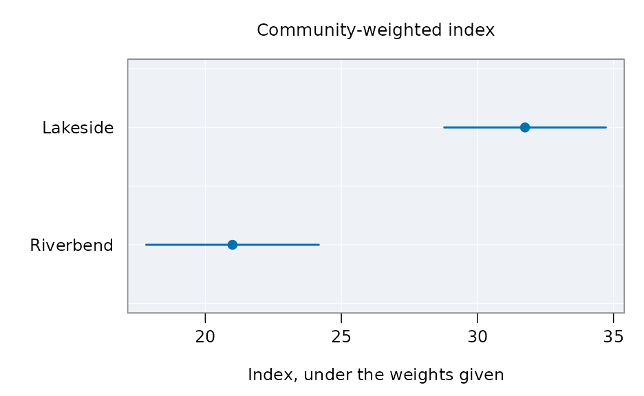
How deficit-framed is a set of results?
frmaud(): Counts how many of the indicators in a report
measure distress, deficit or disparity and how many measure wellness or
strength, and names any group reported on deficits alone.
# your own table: made-up percentages for two communities, with limits
own <- data.frame(
community = rep(c("Lakeside", "Riverbend"), each = 4),
item = rep(c("Hopeful", "Satisfied", "Rarely hopeful", "Low satisfaction"),
2),
pct = c(64, 71, 12, 18, 58, 66, 16, 22),
lo = c(59, 66, 9, 14, 52, 60, 12, 17),
hi = c(69, 76, 15, 22, 64, 72, 20, 27)
)
frmaud(welprof(own, "community", "item", "pct", "lo", "hi",
well = c("Hopeful", "Satisfied"),
distress = c("Rarely hopeful", "Low satisfaction")))
#> Framing audit
#> -------------
#> Groups: 2
#> Wellness indicators: 4
#> Distress indicators: 4
#> Deficit-framed: 50%
#>
#> By group (shrdef: the deficit-framed share)
#> group wellness distress shrdef
#> Lakeside 2 2 0.5
#> Riverbend 2 2 0.5
#>
#> 50% of the indicators reported are deficit-framed.
#>
#> Walter (2016): statistics about Indigenous peoples cluster around
#> disparity, deprivation, disadvantage, dysfunction and difference.
#> This audits the report, not the people it describes.The Community Well-Being index of a community
cwbscr(): Indigenous Services Canada’s Community
Well-Being (CWB) index: income, education, housing and labour force
activity, each scored from 0 to 100, and their mean, from census profile
figures.
# made-up profile figures for two communities, to show the computation
cwbscr(incpercap = c(18000, 31000), highsch20p = c(58, 81),
uni25p = c(6, 19), notcro = c(71, 95),
nomajrep = c(62, 90),
partic = c(55, 68), empl = c(78, 92))
#> Community Well-Being scores
#> ---------------------------
#> Communities: 2
#> Mean CWB: 67.17
#> CWB range: [57.7, 76.6]
#>
#> community income education housing labour cwb
#> 1 57.31 40.67 66.5 66.5 57.74
#> 2 73.57 60.33 92.5 80.0 76.60
#>
#> Each component runs from 0 to 100, and the CWB score is their mean: income, education, housing and labour force activity.
res <- cwbscr(incpercap = c(18000, 31000), highsch20p = c(58, 81),
uni25p = c(6, 19), notcro = c(71, 95),
nomajrep = c(62, 90),
partic = c(55, 68), empl = c(78, 92))
plot(res)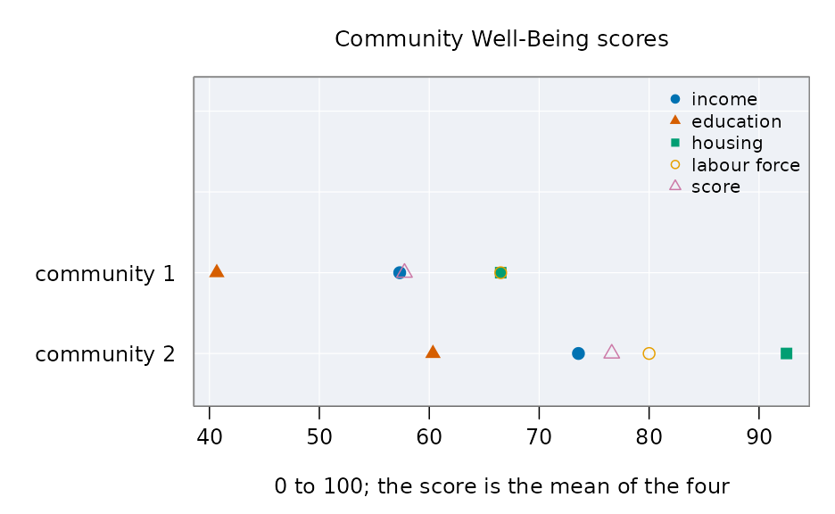
Generations of residential school attendance in a family
genexpo(): Codes the intergenerational exposure used in
the epidemiology of Indian Residential Schools: how many generations
before the respondent attended, 0 (neither parents nor grandparents), 1
(parents or grandparents) or 2 (both a parent and a grandparent), as in
McQuaid et al. (2017).
A dose-response across generations of exposure
exptrnd(): For counts of an outcome (suicidal thoughts,
distress) among people with 0, 1 or 2 generations of residential school
attendance in their family (or any ordered exposure), the odds ratio of
each level against the lowest level, with Woolf intervals, and the
Cochran-Armitage test for a trend across the levels.
# made-up counts by 0, 1 and 2 generations of attendance, to show the
# computation
et <- exptrnd(cases = c(60, 95, 70), n = c(500, 520, 300))
et
#> Odds by level of exposure, with the trend
#> -----------------------------------------
#> Levels: 3
#> People: 1320
#> Cases: 225
#> Trend: chi-square 17.86 on 1 df, p < 0.001
#>
#> dose cases n proportion orratio interval
#> 0 60 500 0.1200 1.000 [1, 1]
#> 1 95 520 0.1827 1.639 [1.16, 2.33]
#> 2 70 300 0.2333 2.232 [1.53, 3.26]
#>
#> At the highest level (2) the odds of a case are 2.23 times those at the lowest (0).
#> The odds rise with exposure: the trend test rejects a flat trend.
#>
#> orratio: the odds of a case at each level over the odds at the lowest
#> (Woolf's interval); the trend test asks whether they rise with level.
attr(et, "trend")
#>
#> Chi-squared Test for Trend in Proportions
#>
#> data: a out of n ,
#> using scores: 0 1 2
#> X-squared = 17.862, df = 1, p-value = 2.375e-05Read the 2021 Census Indigenous Population Profile
cnsprof(): Reads a table of the Indigenous Population
Profile, 2021 Census of Population (Statistics Canada catalogue
98-510-X2021001 to 98-510-X2021016), as published, into one row per
geography, gender, age group, characteristic and group: First Nations,
Metis, Inuit, the other identity groups and non-Indigenous people (or,
in the household tables, Indigenous and non-Indigenous households), each
in its own rows.
# made-up numbers in the layout of a population profile table, for one
# place and two groups (the published tables hold many more rows)
nm <- c(
"Total - Age groups of the population - 100% data",
paste("Number of total income recipients aged 15 years and over in",
"private households in 2020 - 25% sample data"),
"Average total income in 2020 among recipients ($)",
paste("Total - Highest certificate, diploma or degree for the population",
"aged 25 years and over in private households - 25% sample data"),
" No certificate, diploma or degree",
" Bachelor's degree or higher",
"Participation rate",
"Unemployment rate"
)
x <- data.frame(
GEO_NAME = "Lakeside", DGUID = "X0001", GENDER = "Total - Gender",
AGE_GROUP = c(rep("Total - Age groups", 3), rep("25 years and over", 3),
rep("25 to 64 years", 2)),
RESIDENCE = "Total - Residence on or off reserve",
CHARACTERISTIC_ID = 1:8, CHARACTERISTIC_NAME = nm,
`IND_IDENT (2)` = c(1200, 900, 38000, 700, 150, 120, 62, 14),
SYMBOL_IND_IDENT = "",
NON_IND = c(5000, 4000, 52000, 3500, 400, 900, 66, 6),
SYMBOL_NON_IND = "",
check.names = FALSE
)
p <- cnsprof(x)
p[p$chaid == 5, c("group", "characteristic", "level", "parid", "value")]
#> Indigenous Population Profile, tidied
#>
#> group characteristic level parid value
#> Indigenous identity No certificate, diploma or degree 1 4 150
#> Non-Indigenous No certificate, diploma or degree 1 4 400The share of a population with a characteristic, from the census profile
profshr(): The share of a group with a characteristic of
the 2021 Census Indigenous Population Profile (foster children among
children, speakers of an Indigenous language, households needing major
repairs, …), with an approximate confidence interval that carries the
long-form sample and the random rounding of the counts.
# made-up numbers in the layout of a population profile table, for one
# place and two groups (the published tables hold many more rows)
nm <- c(
"Total - Age groups of the population - 100% data",
paste("Number of total income recipients aged 15 years and over in",
"private households in 2020 - 25% sample data"),
"Average total income in 2020 among recipients ($)",
paste("Total - Highest certificate, diploma or degree for the population",
"aged 25 years and over in private households - 25% sample data"),
" No certificate, diploma or degree",
" Bachelor's degree or higher",
"Participation rate",
"Unemployment rate"
)
x <- data.frame(
GEO_NAME = "Lakeside", DGUID = "X0001", GENDER = "Total - Gender",
AGE_GROUP = c(rep("Total - Age groups", 3), rep("25 years and over", 3),
rep("25 to 64 years", 2)),
RESIDENCE = "Total - Residence on or off reserve",
CHARACTERISTIC_ID = 1:8, CHARACTERISTIC_NAME = nm,
`IND_IDENT (2)` = c(1200, 900, 38000, 700, 150, 120, 62, 14),
SYMBOL_IND_IDENT = "",
NON_IND = c(5000, 4000, 52000, 3500, 400, 900, 66, 6),
SYMBOL_NON_IND = "",
check.names = FALSE
)
p <- cnsprof(x)
# the share with no certificate, of the population aged 25 and over
profshr(p, num = "No certificate, diploma or degree")
#> Share of a population with a characteristic
#> -------------------------------------------
#> Numerator: No certificate, diploma or degree
#> Denominator: Total - Highest certificate, diploma or degree for the population aged 25 years and over in private households - 25% sample data
#> Rows: 2
#> Estimate: percent
#>
#> geo dguid residence gender age group numerator denominator estimate interval quality
#> Lakeside X0001 Total - Residence on or off reserve Total - Gender 25 years and over Indigenous identity 150 700 21.43 [16.6, 27.2] ok
#> Lakeside X0001 Total - Residence on or off reserve Total - Gender 25 years and over Non-Indigenous 400 3500 11.43 [9.73, 13.4] ok
#>
#> Highest share: Lakeside, 25 years and over, Indigenous identity (21.43); lowest: Lakeside, 25 years and over, Non-Indigenous (11.43).
#> Their intervals do not overlap: the gap is more than sampling error.
#>
#> The interval carries the long-form sample and the random rounding,
#> not non-response: read it as a lower bound on the uncertainty.An Indigenous standard population from the census
cnsstd(): The age structure of a group in a geography of
the 2021 Census Indigenous Population Profile, as the standard of
dastd or stdprev.
# made-up population counts by age group for two groups, in the layout of a
# profile table
ages <- c("0 to 14 years", "15 to 64 years", "65 years and over")
x <- data.frame(
GEO_NAME = "Lakeside", DGUID = "X0001", GENDER = "Total - Gender",
AGE_GROUP = c("Total - Age groups", ages),
RESIDENCE = "Total - Residence on or off reserve",
CHARACTERISTIC_ID = 1,
CHARACTERISTIC_NAME = "Total - Age groups of the population - 100% data",
`IND_IDENT (2)` = c(1200, 400, 700, 100), SYMBOL_IND_IDENT = "",
NON_IND = c(5000, 800, 3300, 900), SYMBOL_NON_IND = "",
check.names = FALSE
)
cnsstd(cnsprof(x), geo = "Lakeside", ages = ages)
#> age population weight
#> 1 0 to 14 years 400 0.33333333
#> 2 15 to 64 years 700 0.58333333
#> 3 65 years and over 100 0.08333333A Community Well-Being score from the census profile
cnscwb(): Indigenous Services Canada’s Community
Well-Being (CWB) index (cwbscr) computed from the public
2021 Census Indigenous Population Profile, for each geography and
group.
# made-up numbers in the layout of a population profile table, for one
# place and two groups (the published tables hold many more rows)
nm <- c(
"Total - Age groups of the population - 100% data",
paste("Number of total income recipients aged 15 years and over in",
"private households in 2020 - 25% sample data"),
"Average total income in 2020 among recipients ($)",
paste("Total - Highest certificate, diploma or degree for the population",
"aged 25 years and over in private households - 25% sample data"),
" No certificate, diploma or degree",
" Bachelor's degree or higher",
"Participation rate",
"Unemployment rate"
)
x <- data.frame(
GEO_NAME = "Lakeside", DGUID = "X0001", GENDER = "Total - Gender",
AGE_GROUP = c(rep("Total - Age groups", 3), rep("25 years and over", 3),
rep("25 to 64 years", 2)),
RESIDENCE = "Total - Residence on or off reserve",
CHARACTERISTIC_ID = 1:8, CHARACTERISTIC_NAME = nm,
`IND_IDENT (2)` = c(1200, 900, 38000, 700, 150, 120, 62, 14),
SYMBOL_IND_IDENT = "",
NON_IND = c(5000, 4000, 52000, 3500, 400, 900, 66, 6),
SYMBOL_NON_IND = "",
check.names = FALSE
)
p <- cnsprof(x)
cnscwb(p, groups = c("Indigenous identity", "Non-Indigenous"), minpop = 0)
#> Community Well-Being index, from the census
#> -------------------------------------------
#> Rows: 2
#> Not scored: 2
#> Scale: 0 to 100 for each component and the score
#>
#> geo group income education housing labour cwb
#> Lakeside Indigenous identity 71.06 58.10 NA 74 NA
#> Lakeside Non-Indigenous 82.37 67.62 NA 80 NA
#>
#> No group has a score to compare.
#>
#> cwb is the mean of income, education, housing and labour force
#> activity (Indigenous Services Canada's Community Well-Being index).
#> CWB-style, close to but not the Department's index: the public
#> profile's inputs differ (ages 25 and over; housing from households,
#> pooled for First Nations, Métis and Inuit people).
#> Never a measure of wellness as First Nations, Métis or Inuit
#> people define it. A group below minpop people gets no score.
#> Housing needs the household table (dwell).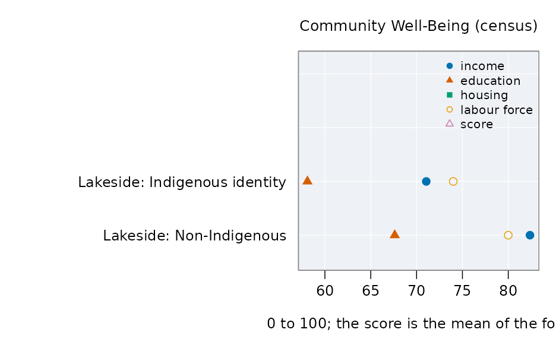
The indicators of Calls to Action 19 and 55, and the tables that measure them
trcind(): Call to Action 19 asks the federal government
to “establish measurable goals to identify and close the gaps in health
outcomes between Aboriginal and non-Aboriginal communities, and to
publish annual progress reports and assess long-term trends”, focusing
on “infant mortality, maternal health, suicide, mental health,
addictions, life expectancy, birth rates, infant and child health
issues, chronic diseases, illness and injury incidence, and the
availability of appropriate health services”. Call to Action 55 asks for
annual data on, among others, “the number of Aboriginal
children-including Metis and Inuit children-in care, compared with
non-Aboriginal children” and “the educational and income attainments of
Aboriginal peoples in Canada compared with non-Aboriginal people”. This
lists, for each indicator, the Statistics Canada tables (or the census
profile) that measure it, the measure, and which direction is
better.
ti <- trcind()
ti[ti$call == "19", c("indicator", "table", "measure", "better")]
#> indicator table
#> 1 infant mortality 17-10-0161
#> 2 maternal health 13-10-0064
#> 3 suicide 41-10-0021
#> 4 mental health 13-10-0924
#> 5 mental health 13-10-0924
#> 6 mental health 13-10-0924
#> 7 mental health 13-10-0924
#> 8 addictions 13-10-0924
#> 9 addictions 13-10-0924
#> 10 life expectancy 17-10-0160
#> 11 birth rates census profile
#> 12 infant and child health issues 13-10-0064
#> 13 chronic diseases 13-10-0924
#> 14 chronic diseases 13-10-0924
#> 15 chronic diseases 13-10-0924
#> 16 chronic diseases 13-10-0924
#> 17 illness and injury incidence 13-10-0157
#> 18 availability of appropriate health services 13-10-0924
#> measure better
#> 1 Infant mortality rate lower
#> 2 Low birth weight; Pre-term births lower
#> 3 Seriously contemplated suicide in the past 12 months lower
#> 4 Perceived mental health, very good or excellent higher
#> 5 Mood disorder lower
#> 6 Anxiety disorder lower
#> 7 Perceived life stress, most days quite a bit or extremely stressful lower
#> 8 Heavy drinking lower
#> 9 Current smoker, daily or occasional lower
#> 10 Life expectancy at birth higher
#> 11 Population aged 0 to 4
#> 12 Small for gestational age lower
#> 13 At least one underlying chronic health condition lower
#> 14 Diabetes lower
#> 15 High blood pressure lower
#> 16 Arthritis lower
#> 17 Mortality lower
#> 18 Has a regular healthcare provider higherThe Call to Action 19 health gaps, in one place
trchlthgap(): For each health indicator of Call to
Action 19 that the published tables measure, each group’s estimate
against non-Indigenous people’s, with its interval, turned into one
scale, the disadvantage ratio: the factor by which the group’s outcome
is worse (above 1) or better (below 1).
# your own table: made-up life expectancies with their limits; the tables
# you do not have are NULL
le <- data.frame(
period = "2017/2019",
group = c("First Nations", "Inuit", "Non-Indigenous"),
estimate = c(74.2, 70.9, 81.8),
lower = c(73.6, 69.1, 81.6),
upper = c(74.8, 72.7, 82.0),
quality = "ok"
)
trchlthgap(health = NULL, lifeexp = le, infmort = NULL, suiide = NULL)
#> Truth and Reconciliation Call 19: health gaps
#> ---------------------------------------------
#> Measures: 1
#> Groups: First Nations; Inuit
#> Clearly worse: 2 of 2 gaps (interval above 1)
#>
#> life expectancy: Life expectancy at birth (2017/2019)
#> group estimate refest disratio interval worse
#> First Nations 74.2 81.8 1.102 [1.09, 1.11] yes
#> Inuit 70.9 81.8 1.154 [1.12, 1.18] yes
#>
#> disratio is the disparity ratio, turned so that above 1 is worse for
#> the group than for the reference (refest).
#>
#> Call 19 asks for measurable goals to close the gaps in health
#> outcomes; Call 55 for annual reports on progress.
res <- trchlthgap(health = NULL, lifeexp = le, infmort = NULL, suiide = NULL)
plot(res)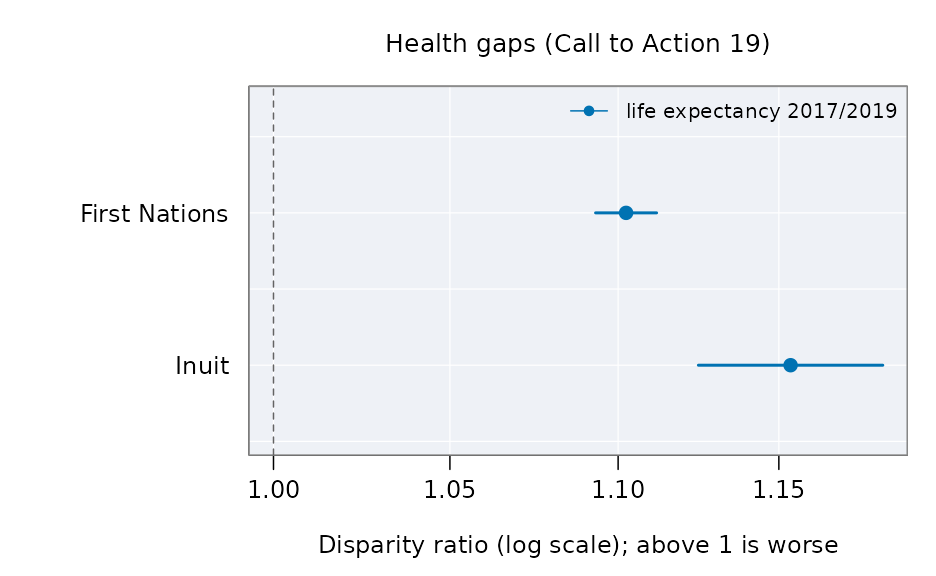
Calls to Action completed, year by year
trccmpl(): The number of the Truth and Reconciliation
Commission’s 94 Calls to Action that the Yellowhead Institute’s annual
accountability reports judged complete, by the year they were completed,
to the end of 2022: the only counts here are those the reports
state.
trccmpl()
#> period yearend completed cumulative source
#> 1 2015-2019 2019 8 8 Jewell and Mosby (2022): 13 complete in all
#> 2 2020 2020 0 8 Jewell and Mosby (2021)
#> 3 2021 2021 3 11 Jewell and Mosby (2021)
#> 4 2022 2022 2 13 Jewell and Mosby (2022)How fast the Calls to Action are being completed
trcprog(): From cumulative counts of completed Calls to
Action over time, the completion rate (calls a year), its exact Poisson
interval, and the year all 94 would be complete at that rate.
p <- trcprog()
p
#> Truth and Reconciliation Calls to Action: progress
#> --------------------------------------------------
#> Completed: 13 of 94
#> Remaining: 81
#> Years counted: 7.04
#> Calls a year: 1.85 [0.983, 3.16]
#> All complete by: 2067 (2049 to 2105)
#>
#> At this pace the remaining 81 Calls are complete around 2067.
#>
#> Completions taken as a Poisson process at a constant rate; the range
#> comes from the rate's interval. Trackers count completion differently.
# your own count: Calls completed by the end of each year, made up
trcprog(done = c(2, 6, 9, 13), yearend = 2016:2019)
#> Truth and Reconciliation Calls to Action: progress
#> --------------------------------------------------
#> Completed: 13 of 94
#> Remaining: 81
#> Years counted: 4.04
#> Calls a year: 3.22 [1.71, 5.5]
#> All complete by: 2045 (2035 to 2067)
#>
#> At this pace the remaining 81 Calls are complete around 2045.
#>
#> Completions taken as a Poisson process at a constant rate; the range
#> comes from the rate's interval. Trackers count completion differently.